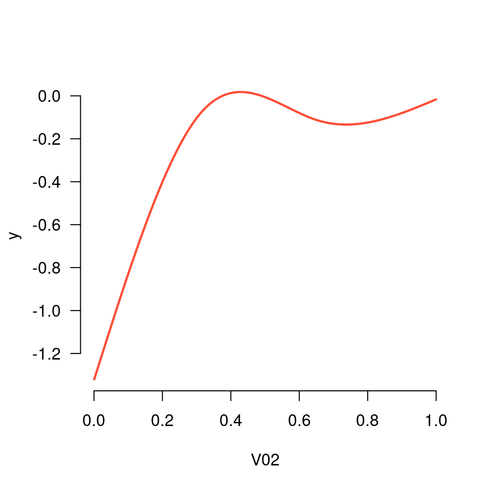

Performs a basis expansion for many features at once, returning output that is compatible
for use with the grpreg() function. Returns an expanded matrix along with a vector
that describes its grouping.
expand_spline(x, df = 3, degree = 3, type = c("ns", "bs"))
| x | Features to be expanded (numeric matrix). |
|---|---|
| df | Degrees of freedom (numeric; default = 3). |
| degree | Degree of the piecewise polynomial (integer; default = 3 (cubic splines)). |
| type | Type of spline, either B-spline ( |
An object of class expandedMatrix consisting of:
X: A matrix of dimension nrow(x) by df*ncol(x)
group: A vector of length df*ncol(x) that describes the grouping structure
Additional metadata on the splines, such as knot locations, required in order to evaluate spline at new feature values (e.g., for prediction)
expand_spline() uses the function splines::bs() or splines::ns() to generate a basis
matrix for each column of x. These matrices represent the spline basis for piecewise
polynomials with specified degree evaluated separately for each original column of x.
These matrices are then column-bound to form a single grouped matrix of derived features. A vector
that describes the grouping present in the resulting matrix is also generated. The resulting
object can be passed to grpreg().
This methodology was originally proposed by Ravikumar et al. (2009), who named it SPAM (SParse Additive Modeling).
Ravikumar P, Lafferty J, Liu H and Wasserman L (2009). Sparse additive models. Journal of the Royal Statistical Society Series B, 71: 1009-1030.
plot_spline() to visualize the resulting nonlinear fits
Data <- gen_nonlinear_data(n=1000) X <- expand_spline(Data$X) fit <- grpreg(X, Data$y) plot_spline(fit, "V02", lambda = 0.03)